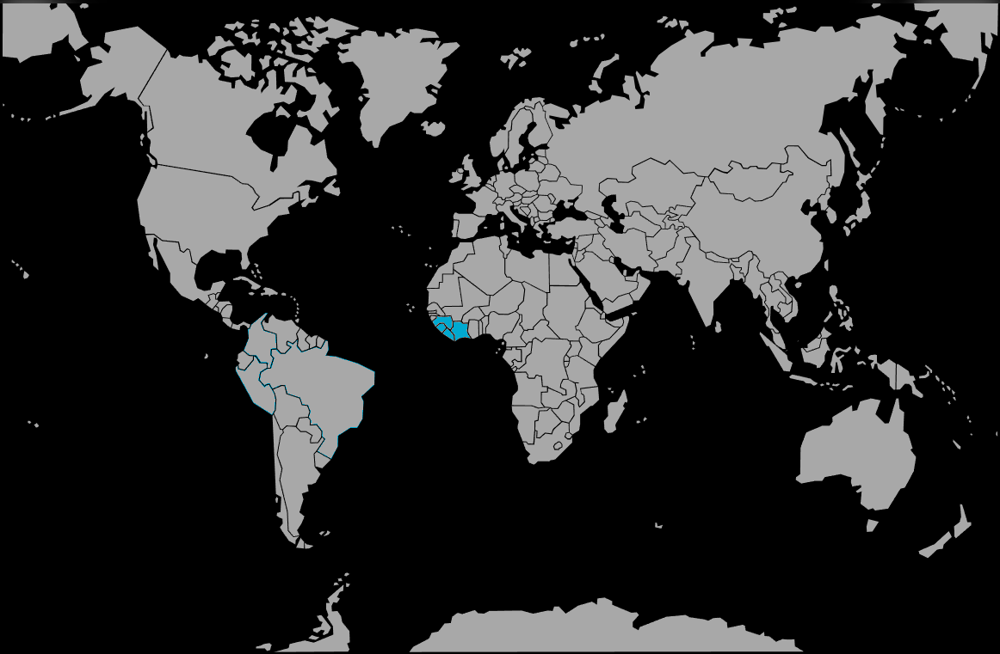

Systématique
- Ordre : Cichliformes
- Famille : Cichlidae
- Sous-famille : Pseudocrenilabrinae
- Genre : Rubricatochromis
- Espèce : Rubricatochromis bimaculatus
Rubricatochromis bimaculatus est un cichlidé ouest‑africain aux couleurs vives, souvent maintenu en spécifique ou avec des compagnons robustes.
Les adultes mesurent en général 8–13 cm standard, soit autour de 10–15 cm en aquarium, avec un dimorphisme marqué au profit des mâles, plus grands et plus vivement colorés.
L’espèce vit dans la zone de mi‑fond et de fond, près des caches et des structures, et adopte un comportement territorial marqué envers les congénères et les poissons de taille similaire.
En aquarium, un décor structuré avec de nombreuses cachettes permet de limiter l’agressivité et d’offrir des refuges aux individus dominés.
Mode : pondeur sur substrat ; un couple formé choisit une pierre plate ou une zone dégagée, la nettoie, puis y dépose les œufs qui seront vigoureusement défendus.
Les parents assurent une garde rapprochée des œufs puis des alevins, qui restent groupés près du couple jusqu’à ce qu’ils deviennent pleinement autonomes.
Dimorphisme sexuel : mâles plus grands, couleur rouge plus intense et nageoires plus développées ; femelles plus petites, souvent moins colorées et avec un ventre plus arrondi.
Espérance de vie : généralement 6 à 8 ans en aquarium, avec une eau de bonne qualité et une alimentation variée.
L’espèce fréquente rivières lentes, bras morts, marigots et lagunes d’Afrique de l’Ouest, sur fonds sablo‑vaseux ponctués de roches, racines et végétation marginale. [web:258][web:267]
Répartition
Origine naturelle :
- Bas de l’Afrique de l’Ouest, des cours d’eau du sud de la côte de Guinée jusqu’au Libéria, avec présence signalée au Sénégal et en Sierra Leone. [web:267][web:285]
- Canaux, petits fleuves et bras morts à fond de boue ou de sable, souvent situés à l’intérieur des terres, associés à des zones de couverture forestière. [web:258][web:291]
Ces milieux sont généralement calmes, légèrement troubles et riches en matières organiques, avec végétation en surplomb et plantes flottantes, ce qui se traduit en aquarium par une eau bien filtrée mais pas forcément cristalline. [web:258][web:267]
Paramètres de maintenance
Température : 22 à 28 °C. [web:258]
pH : 6,5 à 7,5.
GH : 5 à 18 °dGH, eau légèrement à moyennement dure. [web:258]
Courant : faible à modéré, avec bonne filtration et renouvellements réguliers. [web:267]
Volume conseillé : à partir de 200–250 L pour un couple, davantage en cohabitation. [web:291]
Régime alimentaire
Régime : omnivore à forte tendance carnivore ; se nourrit de petits invertébrés, larves, crustacés et parfois de matières végétales, et accepte granulés, congelé et vivant. [web:291][web:293]
Une alimentation variée, distribuée en quantités raisonnables, favorise des couleurs intenses et limite la pollution organique dans le bac. [web:293]